Summary
The industrial revolution brought lots of changes to Great Britain. By the start of the 20th century, England had become a great trading nation with a massive empire that covered 20% of the globe. During the industrial revolution, there were many changes including:
- There was a 260% increase in Britain’s population.
- A change from the cottage industry to factory work.
- Power changes from wind / water wheels to steam power.
- A revolution in transport and communications. (Train and telegraph).
Model of a factory in the Industrial Revolution
Education
In the 1800s, learning became available to everybody including the poorest people. In 1833, the government passed the Factory Act making two hours of education a day compulsory for children working in factories. The government also granted money to charities for schools.
Inventions & Discoveries
The industrial Revolution was the origin to many revolutionary inventions.
Key Inventions:
- (1760) James Watt’s steam engines
- (1769) Arkwright’s Water Frame spinning machine
- (1779) Samuel Crompton’s Mule spinning machine
- (1785) Edmund Cartwright’s power loom
- (1856) Henry Bessemer’s Bessemer converter (iron > steel)
Go To: Inventions and Discoveries for more information (Unfortunatly, the link has been removed as it cuased problems)
Transportation
In the Industrial Revolution it was quicker and easier to get around than it ever was before. Heavy goods were transported by canals and people got around by steam trains. In the 19th Century, George and Robert Stephenson invented the steam train. This was a contraption that used coal and water to make wheels turn. This way of getting around was much easier and safer than the previous transport, carriages.
Power
Coal
Better coal mining techniques allowed deeper mines so workers could get to more coal. Coal was crutial as it was needed to power inventions such as James Watt's Steam Engine which powered all the machinery in the factories.
Steam Power
James Watt made steam engines much more efficient in the 1760s and 1770s giving huge savings on fuel. His other improvements meant steam engines could replace water and horse power in a wide variety of industries which in turn allowed factories to be built anywhere.
Lifestyle
British people in the 19th century were aware that they were living in a revolutionary age. The industrial revolution brought factories, mines and machinery. Towns grew rapidly and with them came run down streets as well as elegant city centres. Steam trains and the Royal Mail made communication around the nation easier. They were massive advances in public health as well. The industrial Revolution was described as ‘almost perfect’. By 1851, British society had divided into different classes: the aristocracy, the middle class, the working class and the poor.
The aristocracy
The aristocracy were rich and included royalty, lords and knighted people (sirs). May to July was the season when the family stayed in London to go to the theatre, dances and parties. August to November was the shooting season when lords moved to their country homes to go shooting. In the winter, the richer families went abroad on holiday.
The middle class
The middle class were successful entrepreneurs. They could socialize with the aristocracy and could join them if they were knighted. Middle class men worked for a living. Many middle class people had created their wealth through success in business. Very few women worked, although some supported their husbands running shops and small businesses. For entertainment, middle class people had theatres, hobbies and shopping.
The working class
The working class were the ‘wealthy’ factory workers. They were the ‘average family’ of the time period. Many working class people wished to join the middle classes. At the start of the 19th century, few poor people received an education until the 1880 education act made primary schools compulsory. Workers in the 19th century worked very hard. In 1844, most employees worked at least 10 hours per day.
The poor
The poor were the ‘poor’ factory workers. They couldn’t afford food or homes. These people were often homeless people and some were lower class servants.
Causes of the Industrial Revolution
Bigger Population
As the population got bigger, there were more people to work in the factories. This burst in population also meant there was a bigger demand on clothing so factories had to make more clothes.
Global Empire
As Britain began to produce more goods, people around the world wanted to buy some of the goods which boosted trading for businessmen. Britain also started to import goods to speed up production so they didn’t have to wait to buy / produce it. The Industrial Revolution would have taken a lot longer to occur if there weren’t people to buy the product.
Materials
New mining techniques allowed deeper mining and more trading of coal. This helped cause the Industrial Revolution as the new inventions such as Watt’s engine needed something powerful to power the steam engine.
Inventions
Brilliant new machines were invented that helped production in factories.
Factories
The machines in factories were very dangerous. They very rarely had safety covers and many workers were injured. If children didn’t work fast enough they got beaten by various tools (even including hammers!). Workers worked very long hours until the Ten Hours act. Most workers worked for at least 13 hours and only had 6 hours to sleep! Some greedy factory owners changed the clock in the factory so they could fine the workers for being late. However, some factories were less dangerous and cleaner.
Inventions, Inventors, Engineers & Engines
James Watt
James Watt was a great steam engine pioneer in the Industrial Revolution. He invented lots of powerful steam engines in the Industrial Revolution that were used to power factory machinery.
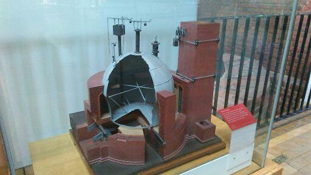Haystack Boiler
This was a type of boiler used with the earliest steam engines. These type of boilers were used to create steam until the 1800s.
"Old Bess" Engine by Boulton and Watt
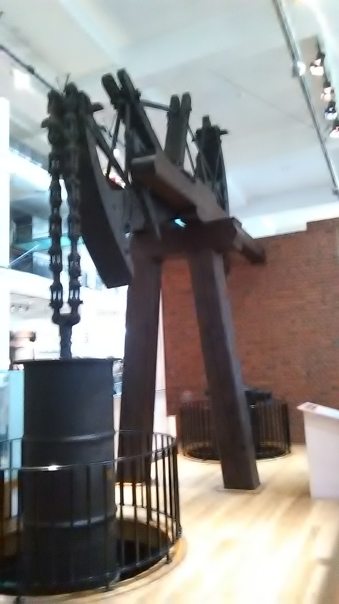Replica of one of Watt and Boulton's first engines. The old bess is the oldest surviving engine built by Boulton and Watt.
Timeline of Engines in factories
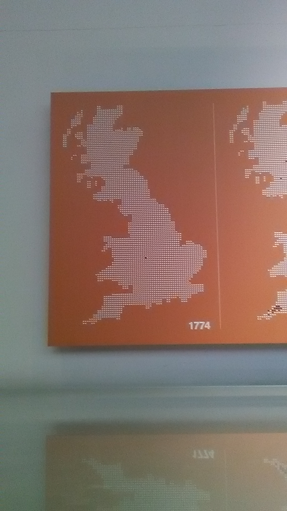
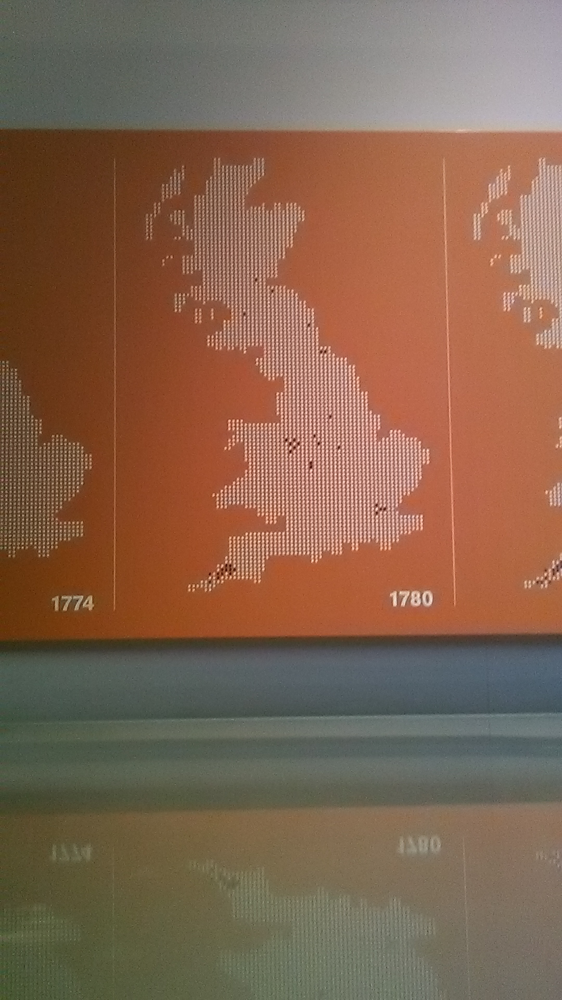
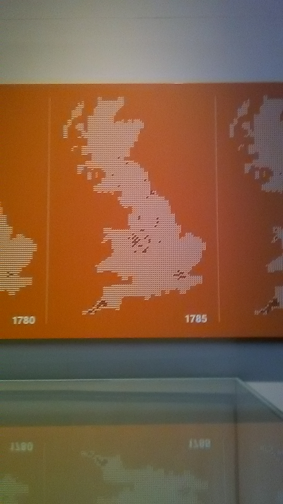
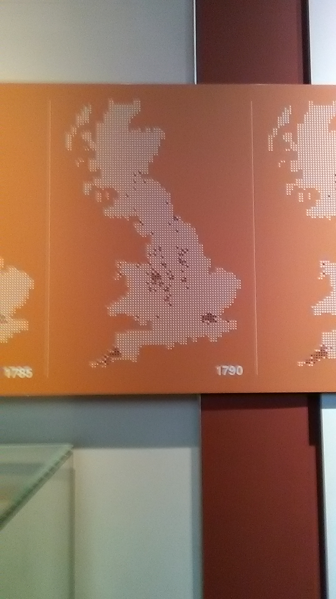
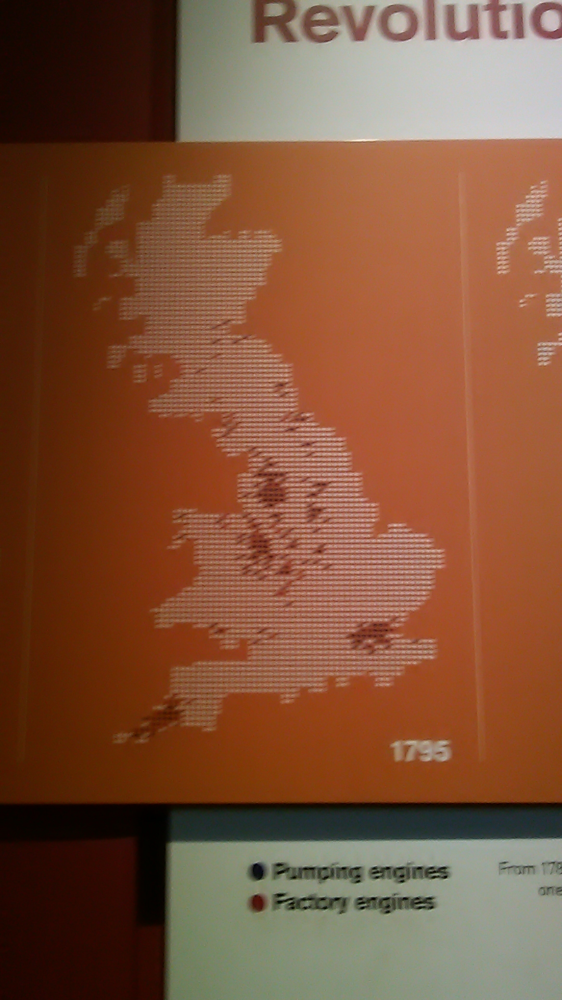
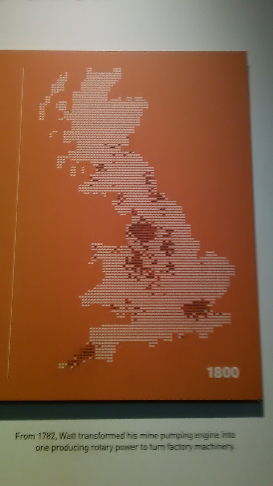
Trains
Above is a model of Richard Trevithick's first steam train built in 1804 in South Wales. It was the world's first steam locomotive to carry people / cargo on a railway.
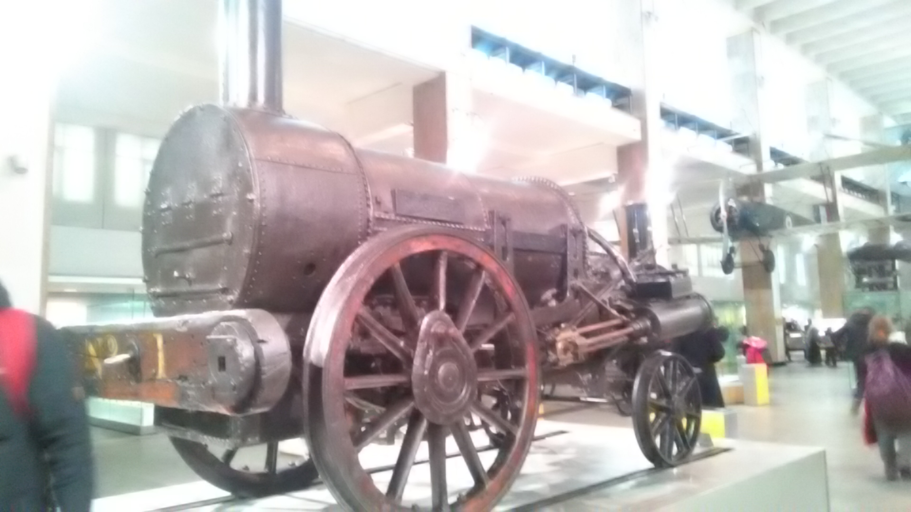Above is the Rocet which changed the 'Train Mania' forever.
Other Engines
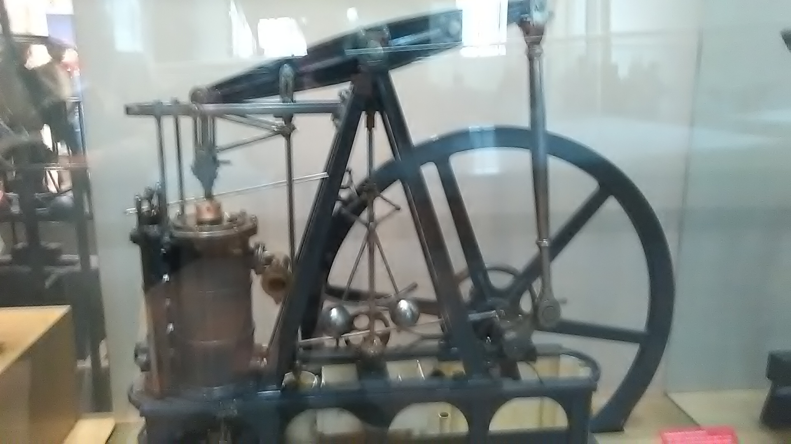
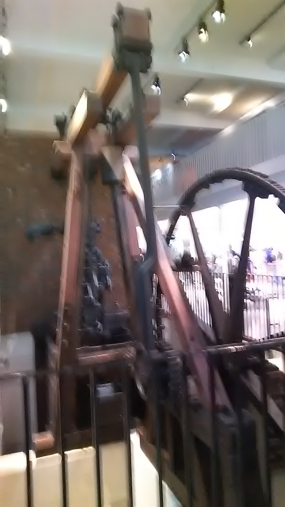
Photos in this section taken by Ben C at the Science Museum London's James Watt and Energy exhibit.
Gallery
Photos / Paintings of the Industrial Revolution.
 A Typical Cloth Factory
A Typical Cloth Factory
 An 19th Century Town
An 19th Century Town
 Children Working In Coal Mines
Children Working In Coal Mines
 Transportation & communications
Transportation & communications
A Typical Cloth Factory
An 19th Century Town
Children Working In Coal Mines
Transportation & communications